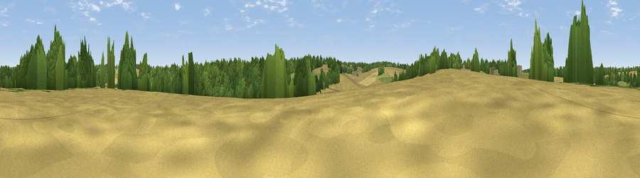

Browning's Hill
#44193 in England · top 83% of its area beats it · near BentworthThe view, rendered

A 360° render of this exact spot computed from the terrain model, tree cover and land cover — summer colours, afternoon light, calibrated against photographs of famous viewpoints. Real trees, hedges and buildings will differ in detail.
The panorama
Grey silhouette: terrain skyline in each direction (720 bearings, Earth curvature and refraction included). Dashed green: skyline with trees (+15 m) and buildings (+8 m) as obstacles. Blue strip: how far the ground is visible on each bearing.
Where the view opens
Wedge length = distance to the farthest visible ground on that bearing (vegetation-aware). Rings at 10, 25 and 50 km.
What fills the view
40% woodland · 37% cropland · 23% grassland ·
Angular shares of the visible panorama (visual magnitude), not map area. Landscape diversity 0.48 (0–1 Shannon).
Key numbers
More beautiful places nearby
The staircase of upgrades: each row has a higher view potential than everything closer. Driving times are estimates from straight-line distance, calibrated against real road routing — check an actual route before setting out.
| Place | Direction | Drive | Score |
|---|---|---|---|
| Wivelrod Hill | S · 2 km | ~5 min | 43.5 |
| Viewpoint near Holybourne | ENE · 5 km | ~11 min | 51.2 |
| Wick Hill | ESE · 9 km | ~18 min | 52.4 |
| Viewpoint near Selborne | SE · 10 km | ~19 min | 52.7 |
| Noar Hill | SE · 11 km | ~22 min | 62.3 |
| Viewpoint near Steep | SSE · 15 km | ~27 min | 68.7 |
| Beacon Hill | SSW · 20 km | ~33 min | 71.7 |
| Viewpoint near Meonstoke | S · 20 km | ~34 min | 74.8 |
51.16094, -1.03477 · source: osm peak · position refined by local search. Computed location — check access rights before visiting.